Теория игр · поведенческая экономика, часть 1
Всё относительно
Приманки, якоря, дефолты, бесплатное и социальные нормы: почему иррациональность предсказуема
Диля Хакимова · по книге Дэна Ариели «Предсказуемая иррациональность»
Что мы предполагали
Рациональный игрок
- знает, чего хочет: у него есть полезность
- умеет решать оптимизационную задачу
- на одни и те же варианты всегда отвечает одинаково
- …а люди так себя ведут не всегда. Но ошибаются одинаково — и это можно предсказать
Я-то точно выбираю рационально. Меня не обманешь.

Проверим. Сегодня будем записывать, сколько раз ты ошибёшься.

Мяу. Я единственный тут случайный — и то честно.
Часть 1
Правда об относительности
Мы почти никогда не знаем, сколько что-то стоит само по себе. Мы сравниваем с тем, что рядом.
Какой оранжевый круг больше?
Круги одинаковые. Глаз сравнивает их с соседями, а не меряет линейкой.
Мозг ленивый: ему проще сравнить, чем оценить. С решениями так же.
Прогноз · 1997 год
Какую подписку вы бы выбрали?
Голосуем в боте @nash_tiger_bot → игра «Подписка». Половина зала видит три варианта, половина — два.
Вариант, который никто не берёт, всё меняет
Приманка (decoy) — вариант, который строго хуже соседа. Её не покупают, но рядом с ней сосед выглядит выгодно.
Ariely, «Predictably Irrational», гл. 1: по 100 студентов MIT Sloan в каждой версии.
Как работает приманка
A и B хороши по-разному — сравнить трудно, выбор болезненный.
Добавим A−: чуть хуже A по всем статьям.
Теперь A есть с чем сравнить, и A выигрывает чаще, чем без A−.
Агент по недвижимости показывает два разных дома, а потом — копию одного из них с протекающей крышей. Угадайте, какой дом продаётся.
Магазин
Три телевизора на витрине
Маленький и дешёвый, огромный и дорогой — и средний, чуть дороже маленького.
«Большой — это уже слишком. А средний — экран заметно больше, а цена почти та же».
Продавцу нужен средний. Крайние варианты на витрине нужны, чтобы его было с чем сравнить.
Грег Рапп, консультант ресторанов
Меню — тоже окружение
- Самое дорогое блюдо почти не заказывают. Оно нужно, чтобы второе по цене выглядело разумным
- Поэтому второе по цене — то, что у шефа получается лучше всего и приносит больше маржи
- Дорогие закуски сообщают: «ресторан дорогой» — и за основное блюдо платят больше
Турагентство
Рим или Париж?
Два тура, всё одинаковое: перелёт, отель, экскурсии, завтраки. Выбрать трудно.
Агентство хочет продать Рим. Добавляет Рим−: тот же тур, но без завтрака.
Рим− не покупают. Зато Рим теперь очевидно лучше, чем хоть что-то рядом.
Работает, только когда человек не знает, чего хочет. Если Париж — мечта детства, приманка бессильна.
Эксперимент в MIT
С кем вы пойдёте на вечеринку?
Два одинаково привлекательных по опросу лица: Джерри и Том. На половину листовок добавили «Джерри−» — его же, но чуть подпорченного в фотошопе.
С «Томом−» всё зеркально: выбирали Тома.
Практический вывод
Идёте на вечеринку — возьмите друга, похожего на вас, но чуть менее эффектного.
Шутка. Наполовину.
Ariely, гл. 1. Числа — около 75% против 25%.
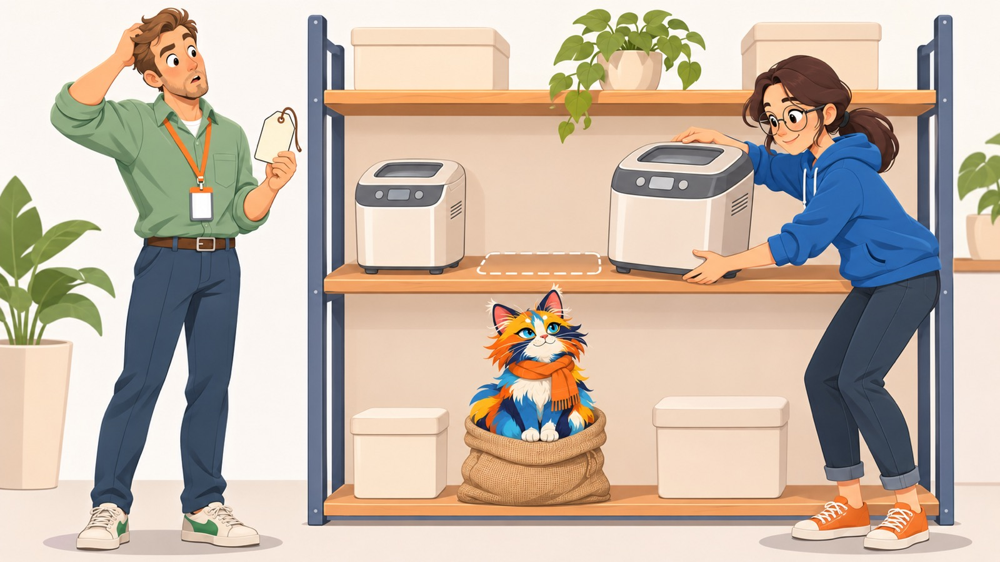
Williams-Sonoma
Хлебопечку никто не покупал
Новый товар, сравнивать не с чем, — продаж нет.
Консультанты: поставьте рядом большую, громоздкую и дорогую версию.
Большую не брали. А продажи маленькой взлетели: «зачем мне такая махина? А вот домашняя — почему бы и нет».
Часть 1½
Когда сравнение делает хуже
Деньги — самая простая линейка, чтобы сравнивать людей. И самая опасная.
Где вы будете довольнее?
Большинство выбирают меньше денег, но первое место в своей компании. Удовлетворённость зависит не только от суммы, но и от окружения.
США, 1993
Зарплаты CEO обязали публиковать. Что дальше?
Каждый CEO увидел, сколько получает сосед, — и пошёл просить столько же.
Во сколько раз зарплата CEO выше средней зарплаты в компании
Ariely, гл. 1. Поэтому главный страх HR — когда зарплаты внутри компании становятся общим знанием.
Вопрос перед решением — тоже окружение
Напишите, почему этот человек вам дорог
причины — пишутся легко
причин — ломаются на пятой
Кто мучился с десятью, потом готов потратить на подарок меньше: «не могу придумать десять — может, не так уж и люблю?»
Шкала тоже подсказывает
Как часто вы чистите зубы нитью?
A: раз в день · раз в неделю · раз в месяц · реже
B: 5 раз в день · 3 раза в день · раз в день · реже
Тот же ответ в B выглядит как «я плохо слежу за зубами» — и к стоматологу идут чаще.
Сэкономить $8: перейдёте через дорогу?
Ручка за $15
Кассир: «Напротив такая же — за $7»
Пиджак за $498
Кассир: «Напротив такой же — за $490»
Выигрыш одинаковый — $8. Но за ручкой идут, за пиджаком — нет: экономию мы считаем в долях от суммы, а не в долларах.
Отсюда люди, которые ищут самое дешёвое молоко, а вечером идут в дорогой ресторан. И допродажи при покупке машины: кожаные кресла за $2000 рядом с ценой машины кажутся мелочью.
Боль от трат: чувствительна к мелочи, слепа к крупному
Чем больше сумма, тем меньше чувствуется каждый следующий доллар.
$8 рядом с $15 — заметный скачок боли.
$8 рядом с $498 — почти ничего.
Миллион и миллион плюс один доллар не различает никто.
Часть 2
Якоря
Первое число, которое мы увидели, становится точкой отсчёта — даже если оно не имеет отношения к делу.
1973, Французская Полинезия
Как продать чёрный жемчуг
Сальвадор Ассаэль выводит на рынок чёрный жемчуг. Покупатели не понимают: это брак? испорченный белый?
Он забирает весь жемчуг с рынка на год, копит самые крупные и красивые жемчужины.
Потом — витрина Гарри Уинстона на Пятой авеню рядом с бриллиантами и рубинами, глянцевые журналы, актрисы.
Новый якорь: чёрный жемчуг — это роскошь. Год паузы нужен был, чтобы забылся старый.
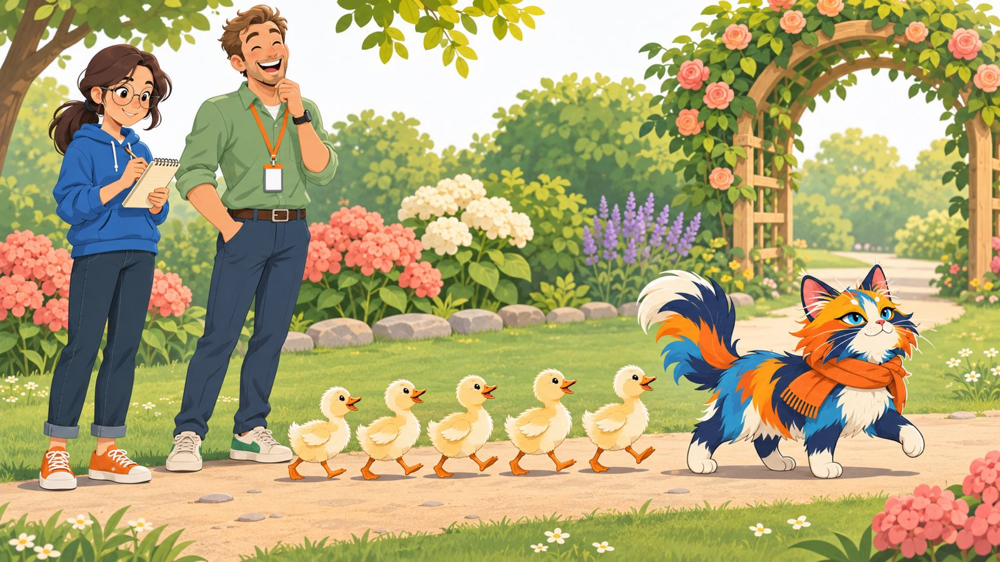
Импринтинг
Гусята идут за первым, кого увидели
Конрад Лоренц: только что вылупившиеся гусята считают мамой первый движущийся объект. Его гусята ходили за его сапогами.
У людей то же с ценами: первая цена, которую мы увидели за вещь, становится «правильной».
Вопрос: насколько случайным может быть этот первый ориентир — и всё равно работать?
Играем в боте
Игра «Якорь»
- Напишите две последние цифры своего телефона
- Купили бы вы предмет за столько долларов? Да / нет
- Теперь всерьёз: сколько вы готовы за него заплатить?
У Ариели были мышка, клавиатура, книга по дизайну, бельгийский шоколад и две бутылки вина. Вместо телефона — последние две цифры номера социального страхования.
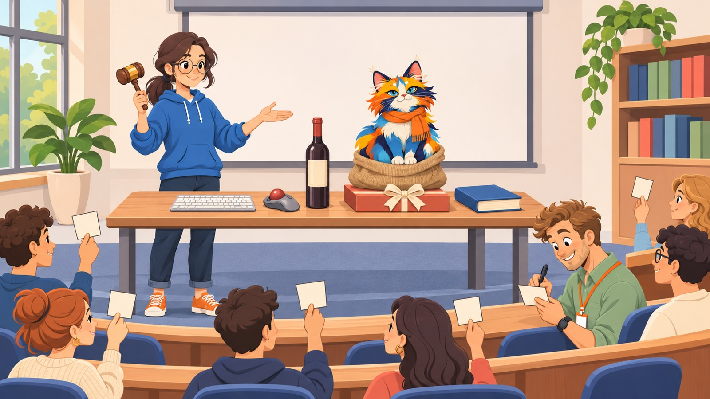
Две случайные цифры двигают цену в разы
| Последние цифры | 00–19 | 20–39 | 40–59 | 60–79 | 80–99 |
|---|---|---|---|---|---|
| Трекбол | $8,64 | $11,82 | $13,45 | $21,18 | $26,18 |
| Клавиатура | $16,09 | $26,82 | $29,27 | $34,55 | $55,64 |
| Книга по дизайну | $12,82 | $16,18 | $15,82 | $19,27 | $30,00 |
| Шоколад | $9,55 | $10,64 | $12,45 | $13,27 | $20,64 |
| Вино попроще | $8,64 | $14,45 | $12,55 | $15,45 | $27,91 |
| Вино получше | $11,73 | $22,45 | $18,09 | $24,55 | $37,55 |
Те, у кого цифры 80–99, ставили в 2–3 раза больше, чем те, у кого 00–19.
При этом внутри столбца всё рационально: клавиатура дороже мышки, хорошее вино дороже простого.
Якорь задаёт уровень, а порядок предметов — нет. Это и называют когерентной произвольностью.
Ariely, Loewenstein & Prelec, QJE 2003; таблица — из гл. 2 «Predictably Irrational». Сверить числа со своим старым слайдом перед лекцией.
А что у нас?
цифры цена
Можно скопировать из выгрузки бота как есть: возьмём первые два числа в каждой строке.
Средняя цена по группам цифр
Переезды в США
Цена жилья, к которой привыкли
Переехали из дешёвого города в дорогой — снимают жильё хуже: за те же деньги, что привыкли платить.
Из дорогого в дешёвый — наоборот, жильё лучше.
Перестраиваются годами. Якорь со старого места приезжает вместе с чемоданами.
Звуки за деньги
Дали послушать противный звук, затем спросили: «Послушаете ещё раз за 10¢?» другой группе — «за 90¢?». Потом: «Сколько вам нужно заплатить?»
Попытки сдвинуть якорь на следующих звуках почти не помогли: первый якорь держит.
Simonsohn & Loewenstein, 2006; звуки — Ariely, Loewenstein & Prelec, 2003 (гл. 2).
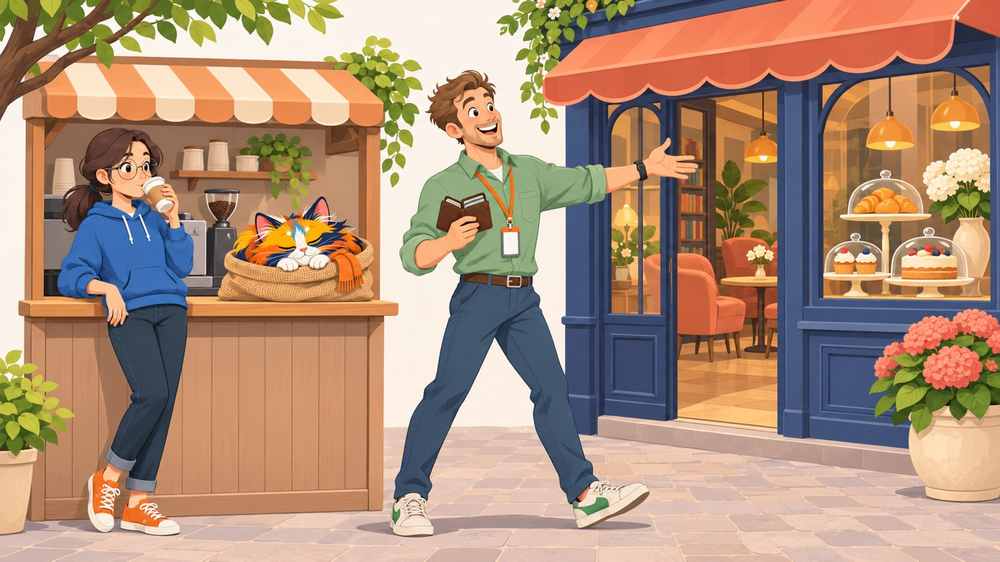
Самостадность
Мы встаём в очередь за собой
Starbucks не стал спорить с дешёвым кофе на каждом углу. Он отстроился: запах, диваны, имя на стакане, «tall · grande · venti».
Первый раз дорого и страшно — берёте маленький. Понравилось.
Во второй раз решение уже есть: вы сами себе якорь. А грамм кофе в большом стакане выгоднее…
Якорь можно перевернуть
Том Сойер красит забор
Наказание? Нет: «Когда ещё нашему брату дают покрасить забор!» Друзья отдают ему сокровища за право поработать.
Ариели читает стихи
Одной аудитории: «Сколько вы заплатите, чтобы послушать?» Другой: «Сколько мне заплатить вам, чтобы вы слушали?»
В обеих группах чем длиннее стих, тем больше денег — только в одной платят они, в другой платят им.
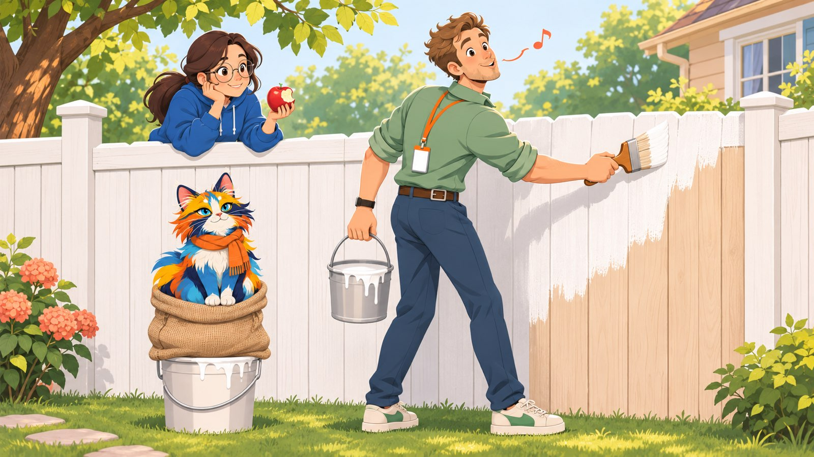
Часть 3
Дефолты
Когда решать больно, мы выбираем то, что выбирается само.
Где больше согласных быть донорами?
Соседние, культурно близкие страны. Нидерланды тратят много на социальную рекламу, Бельгия — нет.
Бельгия — 98%, Нидерланды — 28%. Разница в одной галочке в анкете.
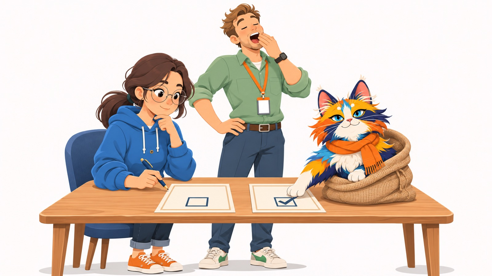
Где галочку надо ставить, а где — снимать
Спросили, почему так решили, — у каждого нашлось разумное объяснение. Хотя на самом деле решения не было.
Оговорка из «Nudge» (2021): это доля согласий в реестре, а не число пересадок; сами Талер и Санстейн против «согласия по умолчанию» в донорстве.
Johnson & Goldstein, Science 2003.
Страховая компания
Перейти на дженерики?
Открытка: «Можно перейти на дешёвый аналог, ответьте письмом». — Почти никто не ответил.
Потом: «Ответить нужно в любом случае, иначе лекарство перестанет приходить». — Многие переключились.
Принудительный выбор убирает дефолт «ничего не делать».
Врачи и замена сустава
Одно непроверенное лекарство или два?
Пациент с болью в бедре. Врачам говорят: забыли попробовать одно лекарство — или забыли попробовать два.
С двумя вариантами выбрать труднее — и 72% отправляют на операцию: это дефолт хирурга.
Redelmeier & Shafir, JAMA 1995.
Супермаркет, стойка с дегустацией
Где купят больше: 6 вкусов или 24?
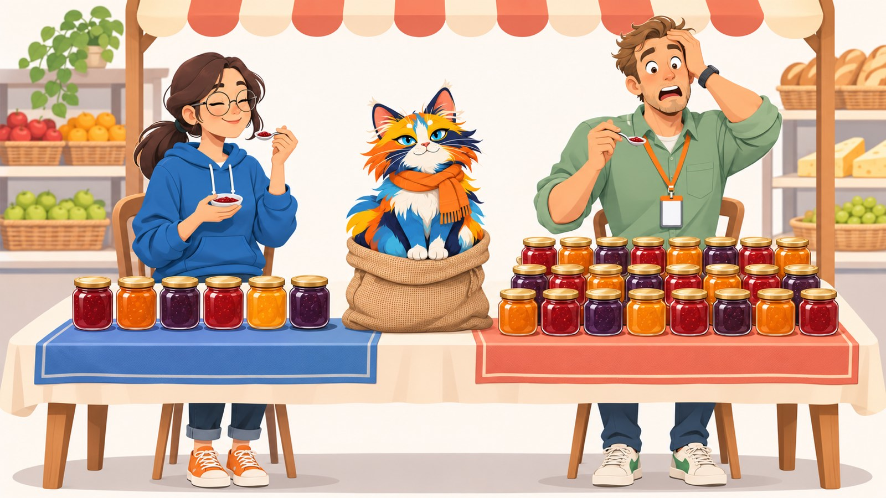
Iyengar & Lepper, 2000. Метаанализ Scheibehenne и др. (2010) нашёл, что в среднем эффект «слишком большого выбора» близок к нулю: он сильный, когда человек не знает, чего хочет.
Правило
Хотите, чтобы люди что-то сделали, — сделайте это дефолтом
Не хотите — добавьте шагов, длинную инструкцию и выбор из двадцати четырёх вариантов.
Боб, а у тебя в продукте автопродление подписки включено по умолчанию?
Часть 4
Цена ноль
Ноль — не просто маленькая цена. Это другая цена.
Играем в боте
Одна конфета в руки
Трюфель
дорогой бельгийский
Kisses
простая шоколадка
Половина зала видит эти цены, половина — на цент дешевле обе.
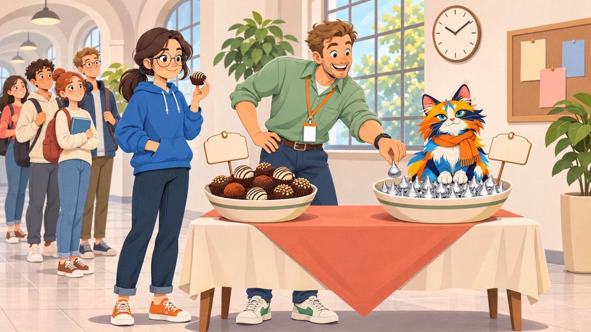
Минус один цент для обеих конфет
Разница в выгоде не изменилась. Но у бесплатного нет минусов: даже если не понравится, мы ничего не потеряли.
Shampanier, Mazar & Ariely, Marketing Science 2007; гл. 3 «Predictably Irrational».
Хеллоуин
Детям сначала дали по 3 конфеты Kisses
«Маленький батончик за одну конфету или большой — за две?» — берут большой. Рационально.
«Маленький бесплатно или большой за одну?» — берут бесплатный.
Повторили на студентах MIT — то же самое.
Подарочные карты Amazon
Какую взять?
Почти все берут бесплатную. Когда то же предложение сдвигают на доллар ($10 за $1 против $20 за $8), большинство выбирают $20.
Amazon
Бесплатная доставка от второй книги
Продажи выросли везде — кроме Франции.
Французы рациональнее? Нет: там доставку сделали не бесплатной, а за 1 франк — около 20 центов.
Сделали ноль — продажи выросли, как везде.
Книга + доставка: что привлекательнее?
America Online, 1996
Интернет без счётчика
Интернет продавали по часам. AOL перешла на безлимит за фиксированную плату и оценила спрос по тем, кто вылезал за пакет.
За ночь подключений стало почти вдвое больше, сессии стали длиннее. Пришлось докупать каналы у конкурентов.
Заплатил один раз — дальше каждый час бесплатный. Так же устроен годовой абонемент в спортзал.
Магический ноль
- «0 калорий» звучит иначе, чем «1 калория»
- Ночь музеев: очередь на два часа под дождём
- Бесплатная вакцина от гриппа, бесплатный чекап, бесплатная парковка для электромобиля — ноль как инструмент
Часть 5
Цена социальных норм
Мы живём в двух мирах: в одном помогают, в другом платят. Смешивать их дорого.
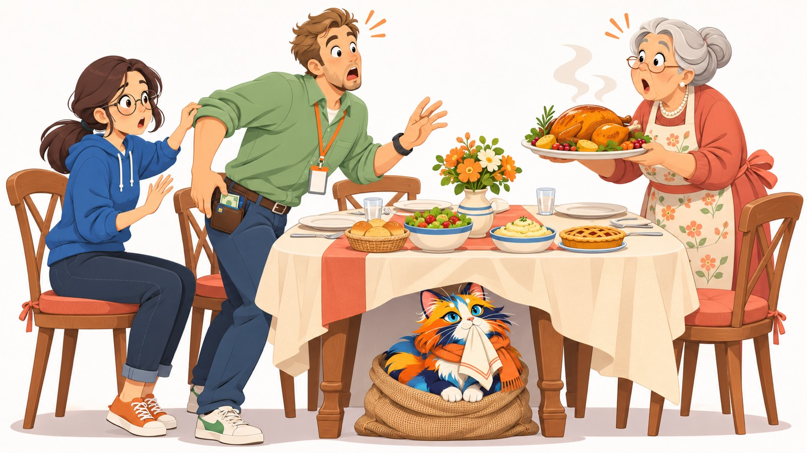
«Мам, сколько я должен за ужин?»
Новый год, родители старались весь день. Вы встаёте из-за стола и предлагаете заплатить. Щедро.
Вечер испорчен. На следующий Новый год — полуфабрикаты.
Социальные нормы: «я помогаю, потому что мы свои».
Рыночные нормы: «я работаю, потому что мне платят».
5 минут: перетаскивать кружки в квадраты
Кто сделает больше?
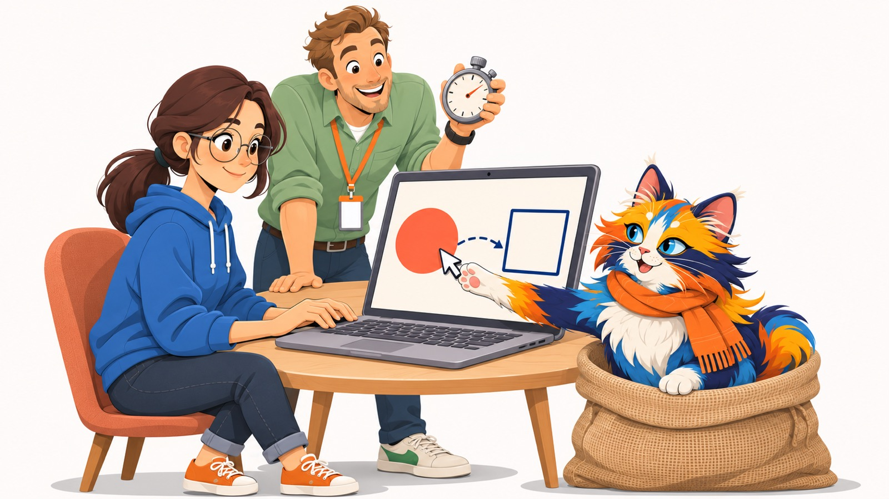
Heyman & Ariely, Psychological Science 2004; гл. 4.
Ассоциация пенсионеров США
Юристы для пенсионеров
Попросили адвокатов брать с пенсионеров по $30 в час. — Почти никто не согласился: «$30 вместо $300?»
Попросили вести дела бесплатно. — Согласились многие: это уже не скидка, а доброе дело.
Спущенное колесо
«Помогите, я заплачу $3»
Девушке со спущенным колесом помогают охотнее, если она ничего не предлагает.
$3 переключают в рынок, а за $3 менять колесо никто не станет.
Подарок или деньги?
Чтобы обрадовать человека так же, как продуманным подарком, денег надо дать больше, чем подарок стоит.
Подарок → сертификат → деньги: на одну и ту же сумму радуют по убыванию.
Если подарок угадан. Бесполезная вещь проигрывает деньгам.
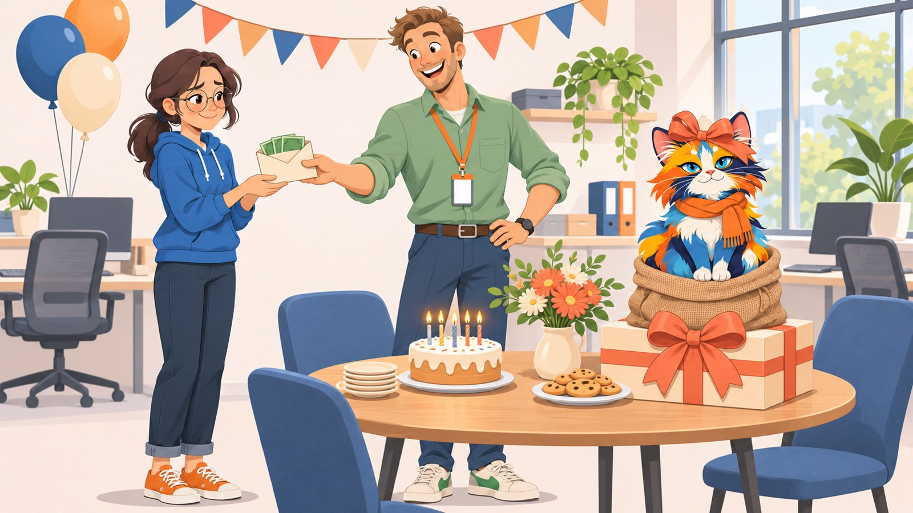
Хайфа, 10 детских садов
За опоздание ввели штраф. Опозданий станет…
Опозданий стало примерно вдвое больше. Чувство вины превратилось в цену — и цена оказалась ниже часа воспитательницы.
Штраф потом отменили — а опоздания так и остались: однажды разрушенную норму назад не вернуть.
Рыночная норма в офисе
Полный контракт: пропуск в 8:30, обед по часам. В 17:00 все встают и уходят.
Неполный контракт: гибкий график, кофе с печеньем, о вас заботятся «как дома».
Когда горит проект, во втором случае люди остаются на выходные — потому что они в мире социальных норм.
Gneezy & Rustichini, «A Fine is a Price», J. Legal Studies 2000.
Итог
Три вопроса для продакта
Что рядом?
Приманка, третий вариант, порядок в меню. Решаем, сравнивая.
Что было первым?
Якорь: первая цена, первая привычка, первое решение.
Что бесплатно и что по умолчанию?
Ноль и дефолт — самые сильные рычаги. Плюс не смешивайте деньги и дружбу.
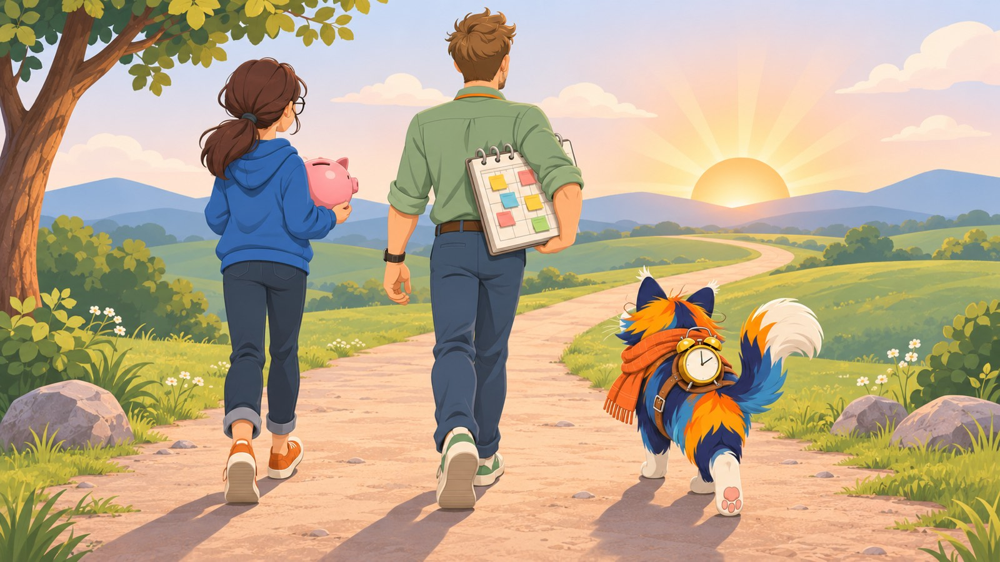
В следующий раз: а если враг — это ты сам завтрашний?